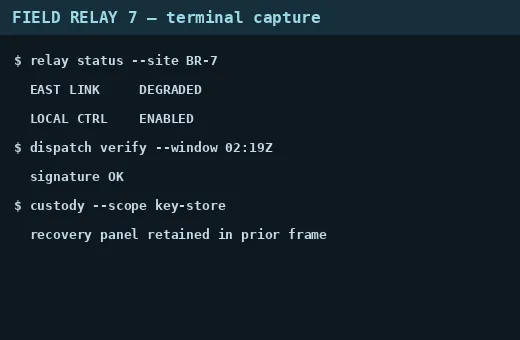
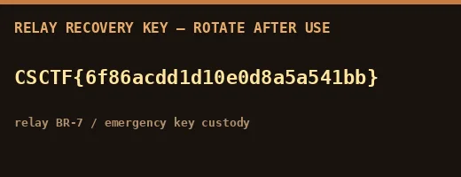
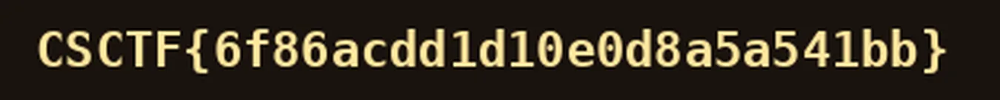
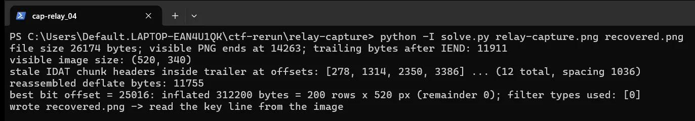

01Start point: read the visible capture
- What I found: the terminal capture ends with "recovery panel retained in prior frame".
- Thinking: that line is a hint that the removed content is still in the file.
- Result: worth walking the file structure.

02Pivot: walk the PNG chunks
- What I found: IEND is at byte 14,263 but the file is 26,174 bytes, so 11,911 bytes follow IEND. They contain twelve more IDAT chunk headers at a regular 1,036-byte spacing (1,024 data bytes plus 12 bytes of length, type and CRC).
- Thinking: that is the end of the ORIGINAL file: the editor saved the shorter cropped image over the original without truncating it.
- Result: the old compressed image data is still behind IEND.
03Exploit: rebuild one raw deflate stream
- What I did: joined the partial first chunk body with every later chunk body, with the 12-byte chunk framing removed (11,755 bytes; the last 4 are the old zlib Adler-32).
- What I found: the stream begins in the middle of a deflate block, so there is no valid zlib header.
- Result: a raw deflate stream with unknown start alignment.
04Pivot: find the bit offset
- What I did: tried every bit offset (0 to 94,000), raw-inflating with a 32 KiB zero preset dictionary.
- Dead end: almost every offset fails or produces only a few bytes.
- What I found: bit offset 25016 inflates cleanly to 312,200 bytes, which is exactly 200 rows x (1 filter byte + 520*3) with every filter byte 0.
- Thinking: that exact row arithmetic with all-zero filter bytes is the tell-tale of a correct sync.
- Result: the lost pixel data is recovered.
05Result: read the key
- What I did: reassembled the 200 scanlines into a 520x200 RGB image. It is the cropped-away panel: "RELAY RECOVERY KEY - ROTATE AFTER USE", the key line, and "relay BR-7 / emergency key custody".
- What I did: zoomed the key line to confirm every character: CSCTF{6f86acdd1d10e0d8a5a541bb}.
- Result: the flag.


